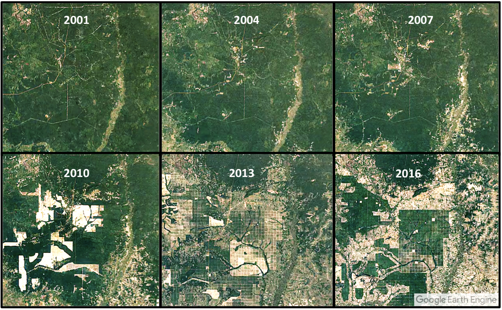

As of 2023, 8,404 Species Are Critically Endangered, Just Inches From Total Extinction
As the world population increases, so do the resources needed to sustain and carry such a large number of humans and to follow - waste from 8 billion people. Many of these resources being found in the homes of our many neighboring environments, deforestation scars the landscapes for logs and to make place for crops, global warming acts as a catalyst towards already devastating natural disaters, Fires burn hotter and further as countries shrivel up into fuel, hurricanes and typhoons are more frequent and rampant. Pollution chokes out sealife,
The effects of deforestation captured throughout the years via satellite